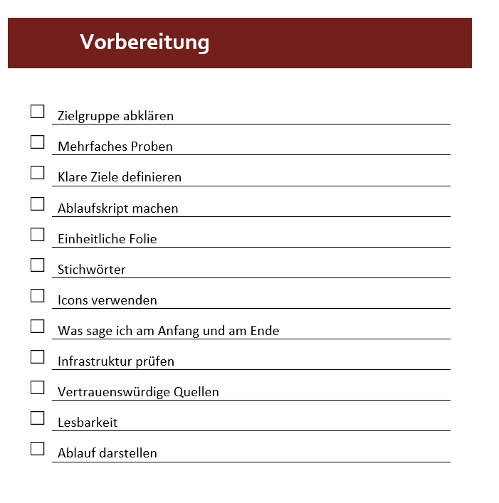
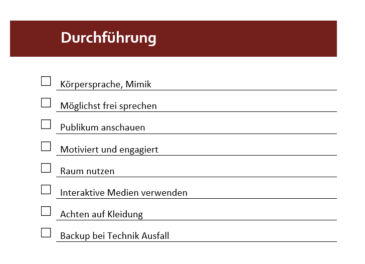
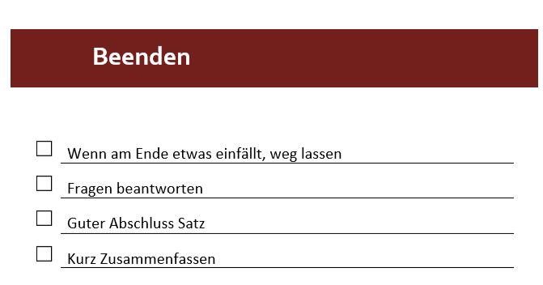

Elektronische Checkliste für Präsentationen



Welche Punkte ich bei Präsenation berücksichtigt habe und welche weniger
Bei einer Präsentation habe ich bis jetzt kein Ablaufskript verwendet, da ich eigentlich bereits den vollständigen Inhalt mit dem Inhaltsverzeichnis jeweils aufzeigte und dachte, es wäre nicht notwendig. Ausserdem habe ich mir bis jetzt nie Gedanken gemacht, wie viel Ahnung die Zuschauer haben, denen ich etwas präsentiere. Meistens waren es zum Glück Themen, von denen nur wenige eine Ahnung hatten. Auf das Aussehen der Folien habe ich immer geachtet, dass sie einheitlich aussehen, die Schrift gut aussieht und auch die Grösse dazu passt. Icons habe ich nie bei Präsentation verwendet, da ich dachte, diese würden zu stark auffallen. Für dem Einstieg und den Schluss habe ich immer eine ganz normale Anleitung wie mit «Herzlich Willkommen bei unserem Vortrag über...» verwendet.
Ich versuchte bei der Präsentation auf Mimik etc. zu achten, aber ich bin jedes Mal nervös und das merkt der Zuschauer dann auch. Ich versuchte mit dem Publikum Augenkontakt zu haben und motiviert aufzutreten. An ein Backup von der Datei habe ich bis jetzt noch nie gedacht, aber ich hatte bis jetzt auch noch nie Probleme.
Am Ende der Präsentation bin ich immer auf die Fragen der Personen eingegangen. Falls ich etwas vergessen habe innerhalb der Folien, habe ich dies nicht angesprochen. Eine kurze Zusammenfassung muss nicht schlecht sein, aber es sollte dann nicht mehr lange dauern. Ausserdem war mein Abschlusssatz immer in etwa der Gleiche und deshalb nicht gut genug.
Auf welche Punkte ich in der Zukunft mehr achten werde
In der Zukunft möchte ich darauf achten, dass ich in der Präsentation den Ablauf darstelle und in den Folien auch Icons, oder einfach GIFs einfüge, damit die Präsentation mehr Leben eingehaucht bekommt. Ausserdem möchte ich den Anfangs- und Schlusssatz ändern und mir mehr Gedanken darüber machen. Bei einem Technik-Ausfall sollte ich vorbereitet sein und eine Lösung bereit haben.